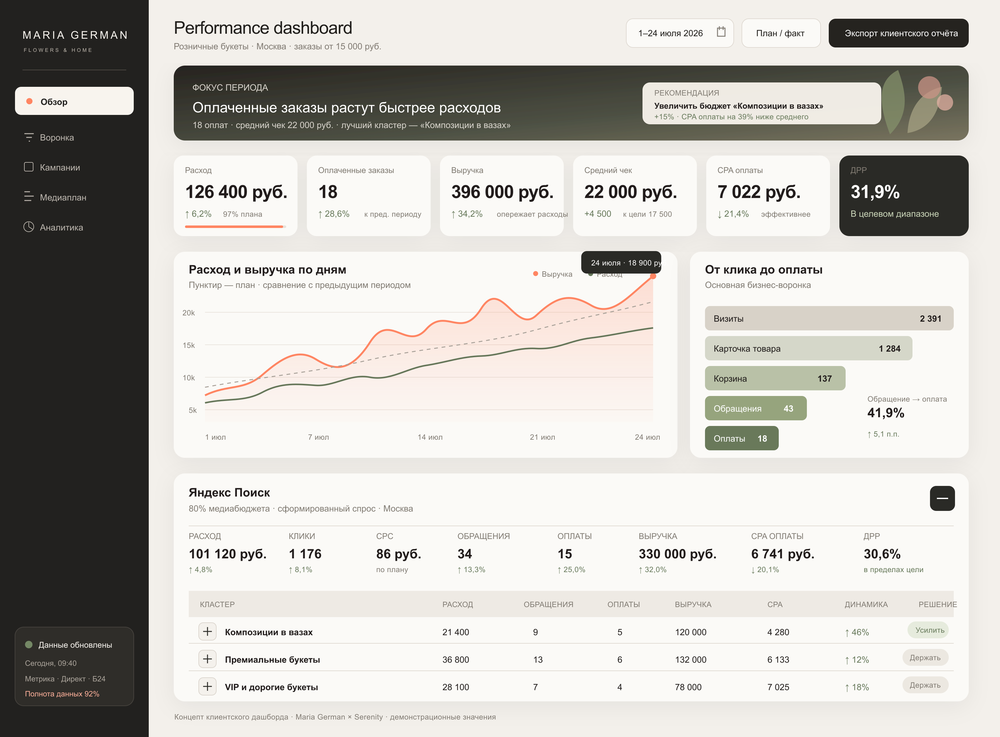

У Maria German высокий чек, узнаваемый стиль и минимальный заказ 15 000 ₽. Значит, лишние обращения будут стоить слишком дорого.
Коммерческое предложение
Performance-запуск для Maria German
За первый квартал рекламы нужно понять, какие запросы и аудитории приводят оплаченные заказы нужного чека.
01 · Что предлагаем
Понять, что приводит заказы нужного чека
Не берем дешевые запросы, отдельно ведем брендовые, связываем рекламу со сделками и каждую неделю убираем лишний трафик.
Будет видно, какие букеты, запросы и аудитории дают оплаченные заказы, а куда бюджет лучше не вести.
02 · Как покупают Maria German
Здесь выбирают не просто букет
Maria German - это авторская флористика, редкие сорта, композиции в вазах, растения, интерьерный декор и регулярные поставки для дома, офиса и событий.
Такую покупку не ищут через “цветы недорого”. Здесь важны вкус, сервис, индивидуальный подбор и уверенность, что подарок будет выглядеть как нужно.
10 000 ₽текущий средний чек в рознице
18 000 ₽целевой средний чек, ориентировочно
15 000 ₽минимальная сумма для рекламного трафика
03 · Почему нужен фильтр
Почему не стоит сразу запускать широкую рекламу
Она быстро дает обращения, но часть людей выбирает по скорости, скидке или ближайшей цене.
Если не разделить спрос, букет от 15 000 ₽ начинает конкурировать с массовыми предложениями и теряет контекст.
Рядом в поиске встречается Germen. Брендовые запросы Maria German лучше вести отдельно, чтобы не терять тех, кто уже ищет именно вас.
Сначала отделяем аудиторию, готовую покупать продукт уровня Maria German. Широкие запросы подключаем после первых оплат.
04 · Принцип продвижения
Сначала убираем лишние запросы, затем оставляем то, что приводит оплаты
- премиальные, авторские и дизайнерские букеты;
- дорогие, VIP и эксклюзивные букеты;
- доставку премиальных цветов в Москве;
- композиции в вазах и подарки;
- цветочную подписку и B2B-флористику после накопления данных;
- брендовые запросы Maria German.
- “дешево”, “недорого”, “скидка”, “бесплатно”;
- запросы до 5 000 и до 10 000 ₽;
- опт, семена, рассада и искусственные цветы;
- обучение, курсы и вакансии;
- широкие показы в РСЯ на холодную аудиторию.
Минимум от 15 000 ₽ показываем до перехода на сайт: в объявлениях, быстрых ссылках и посадочных сообщениях.
05 · Рекомендуемая стратегия
Поиск - для тех, кто уже выбирает. Ретаргетинг - для тех, кто смотрел каталог
Яндекс Поиск
80%
Работаем с готовым спросом
Разделяем кампании по типам спроса: авторские букеты, VIP-букеты, доставка, композиции в вазах и брендовые запросы.
РСЯ и ретаргетинг
20%
Возвращаем тех, кто выбирал
Работаем с посетителями каталога, карточек и незавершенных заказов. Похожие аудитории подключаем позже, когда будет больше данных.
Отдельная защита бренда
В Москве есть студия Germen с почти совпадающим названием. Поэтому брендовые запросы Maria German лучше вести отдельно: так люди быстрее попадают на официальный каталог, а не к конкуренту.
06 · Посадочная страница
Сайт уже выглядит дорого. Дальше важно убрать сомнения перед заказом
Видимость цены и минимума
Минимальный заказ 15 000 ₽ лучше показать до клика и сразу после перехода.
Масштаб букета
Размер, высота, диаметр, фото в интерьере или рядом с человеком помогают понять, что именно приедет.
Доставка и гарантии
Сроки, зоны, защита от погоды, условия замены и фото-согласование снижают тревогу перед заказом.
Индивидуальный подбор
“Выбор Марии Герман” с бюджетами 15 000 / 25 000 / 40 000 ₽ и выше может помочь тем, кто хочет доверить выбор бренду.
07 · Почему Serenity
Serenity работала с брендами, где цена не главный аргумент
Darkrain - premium jewelry e-commerce
С 2018 года работаем с интернет-магазином украшений: реклама, ретаргетинг, контент, аналитика и визуальная подача.
300-700заказов в месяц
×5рост продаж
×6рост брендового спроса
Boca Room
Дизайнерская мебель и шоурум: приводили людей, которые выбирают долго и не ищут самый дешевый вариант.
×3 продажи Открыть кейсSunseeker
Премиальная аудитория и высокая цена ошибки: снижали стоимость целевой заявки и убирали случайные обращения.
CPL в 6 раз ниже Открыть кейсAnker
Интернет-магазин и розничная сеть часов: оценивали рекламу по покупкам и ROMI, а не по поверхностным метрикам.
1 086 транзакций Смотреть eCom-кейсы08 · Доказательства экспертизы
Подтверждения, которые важны именно здесь
Workspace Digital 20241 место
за работу с eCom-брендом Darkrain
Рейтинг Рунета 20243 место
в digital для категории “Красота, мода”
Рейтинг Рунета 20256 место
по России в дизайне ювелирных украшений
Рейтинг Рунета 20221 место
по разработке позиционирования в России
09 · Медиаплан на квартал
Три месяца: начинаем осторожно и добавляем объем по факту оплат
Около 2 000 визитов, ориентир 35 обращений. Поиск - около 90 000 ₽, РСЯ и ретаргетинг - около 20 000 ₽.
Около 2 400 визитов, ориентир 40-45 обращений. Бюджет переносим туда, где появляются первые оплаты.
Около 2 600 визитов, ориентир 50 обращений. Увеличиваем только те направления, где обращения доходят до оплаты.
Прогноз обращений - ориентир для теста, а не гарантия продаж. Бюджет увеличиваем после проверки оплат, выручки, ДРР, маржи и доли заказов нужного чека.
10 · Почему начинаем именно так
Не тратим стартовый бюджет на тех, кто еще не выбирает букет
В категории “Цветы и букеты” поиск продолжает расти, а клики в сетях заметно просели. Первый бюджет лучше вести туда, где человек уже выбирает подарок.
+5%поиск
-26%сети
кликов приходится на mobile. Каталог, корзина и связь должны быть без трения.
на поиске покупают чаще, чем в сетях. РСЯ лучше использовать аккуратно.
приходят впервые. На сайте нужно быстро показать сервис, доставку и согласование.
мужчины. Частый сценарий - премиальный подарок, где важны уверенность и сервис.
Дополнительно · Яндекс Карты
Карты стоит обсудить после согласования основного запуска
В Картах человек видит карточку бренда, фото, маршрут, звонок, витрину товаров и похожие организации рядом. Для Maria German это может быть полезно в моменте, когда покупатель ищет подарок или интерьерную композицию поблизости.
В основной старт проекта этот бюджет не включаем. Предлагаем вернуться к нему после согласования запуска и отдельно обсудить короткий тест.
запроса по релевантным рубрикам за 30 дней в радиусе 1 км.
похожих организаций в радиусе 5 км.
прямые и дискавери-переходы за 30 дней.
рекламная подписка в Яндекс Картах на 90 дней.
Если после теста решим брать 180 или 360 дней, через Serenity можно сохранить скидку Яндекса и оплачивать размещение помесячно. Брендированное размещение — от 149 940 ₽ за 90 дней; его имеет смысл рассматривать позже, после первых звонков, маршрутов и обращений из базовой подписки.
11 · Аналитика и интеграции
Сложную аналитику подключаем тогда, когда ей уже есть что считать
Рекомендуем начать с базовой аналитики.
Ее достаточно, чтобы оценить рекламу в первые недели. Расширенную аналитику имеет смысл подключать после первых данных и подтверждения гипотез.
Яндекс Директ
сайт на Tilda
Метрика и Ecommerce
заказ, форма или мессенджер
Битрикс24
статус и сумма сделки
офлайн-конверсия в Метрику и Директ
Расширенная система на старте заметно увеличит бюджет. При этом точность данных все равно зависит от того, как ведутся сделки в Битрикс24.
Поэтому сначала фиксируем базовый путь: клик, товар, форма или заказ, UTM-метки, статус и сумма сделки. Так можно принимать решения по выручке, а не только по обращениям.
Обязательные события
просмотр товара, корзина, оформление, заказ, оплата, формы, переходы в WhatsApp и Telegram, отмена заказа, источник, кампания и UTM в Битрикс24.
Рекомендация по запуску
Начать с варианта A: привести в порядок поля сделки, вебхуки и статусы в CRM. К варианту B переходить, когда звонков станет больше и будет понятна экономика рекламы.
Что нужно до старта
До запуска рекламы в CRM должны передаваться источник, кампания, UTM, товар, статус и сумма сделки. Сроки считаются после готовности полей сделки и вебхуков в Битрикс24.
12 · Что будет видно после запуска
Каждую неделю — понятная сводка по рекламе и продажам
В одном экране собраны расход, обращения, оплаченные заказы, выручка, ДРР и ближайшие действия на неделю.
По мере накопления данных сводку можно дополнять метриками, которые важны для Maria German: по категориям, каналам, чеку, повторным заказам и окупаемости.

13 · Что делает команда в первый месяц
Запуск - это не только настроить кампании. Главное быстро убрать лишний трафик
01
стратегия запуска и структура кампаний;
02
семантика и минус-слова для дешевых и неподходящих запросов;
03
Яндекс Директ: поиск, РСЯ, ретаргетинг и брендовая кампания;
04
объявления, быстрые ссылки, расширения и UTM-разметка;
05
баннеры для РСЯ и ретаргетинга в рамках запуска;
06
экспресс-аудит посадочной, корректировка ставок, запросов и площадок;
07
еженедельная связь с командой и ежемесячный отчет;
08
рекомендации по второму этапу: декор, подписка, B2B и рост бюджета.
14 · Стоимость и формат работы
Есть два формата. Рекомендуем тот, где ежемесячные расходы ниже
Кабинет клиента
118 000 ₽ / мес.Кабинет и счетчики остаются на стороне клиента. Serenity работает через агентский доступ.
Кабинет Serenity
103 000 ₽ / мес.Рекламный кабинет пополняется через агентство. Работы стоят ниже, а если сотрудничество закончится, кабинет можно отсоединить без потери статистики.
Медиабюджет оплачивается отдельно. Аналитику можно начать с базовой настройки и не перегружать первый месяц лишними расходами.
15 · План запуска
Первые четыре недели нужны, чтобы настроить спрос по качеству заявок
Подготовка
Доступы, аудит посадочной, цели, схема передачи данных, семантика, минус-слова и объявления.
Запуск
Поиск, брендовая кампания, ретаргетинг, проверка объявлений, целей и первых обращений.
Калибровка
Чистка запросов и площадок, оценка обращений и первых оплаченных заказов.
Рост
Больше бюджета на рабочие направления, похожие аудитории при достаточном объеме данных и отдельное решение по декору.
16 · Команда проекта
На проекте будет команда для связи, рекламы, стратегии и данных
17 · Старт проекта
Сколько заложить на первый месяц
при работе в кабинете Serenity
первый месяц теста
38 000 ₽ настройка и 19 000 ₽ сопровождение
решение о росте бюджета принимаем после фактических оплат
После первого месяца смотрим стоимость обращения, стоимость оплаченного заказа и окупаемость рекламы.
Следующий шаг
Начать с теста и увеличивать бюджет только после подтвержденных оплат
Рекомендуемый старт: медиабюджет 110 000 ₽ в первый месяц плюс выбранный формат работ. После запуска смотрим не на обещанную окупаемость, а на реальный путь: спрос - обращение - оплата - выручка.